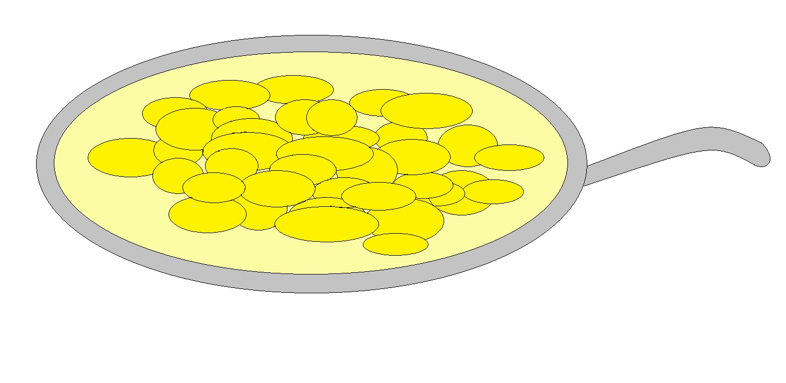

Fried eggs
A very simple dish made of potatoes.
It is very delicious.
Ingredients
- Potatoes (3 or more pieces depending on your needs)
- Oil(1/2 cup)
- Salt (1/10 of a teaspoon)
Recipe instructions (learned from a friend)
- Warm a pan with oil on a stove.
- Clean and remove the cover of potatoes, cut them into slices.
- Add salt and fry until the potatoes become golden in 10-15 minutes of frying.
- Enjoy the fried potatoes.
Return to top
Return to main page